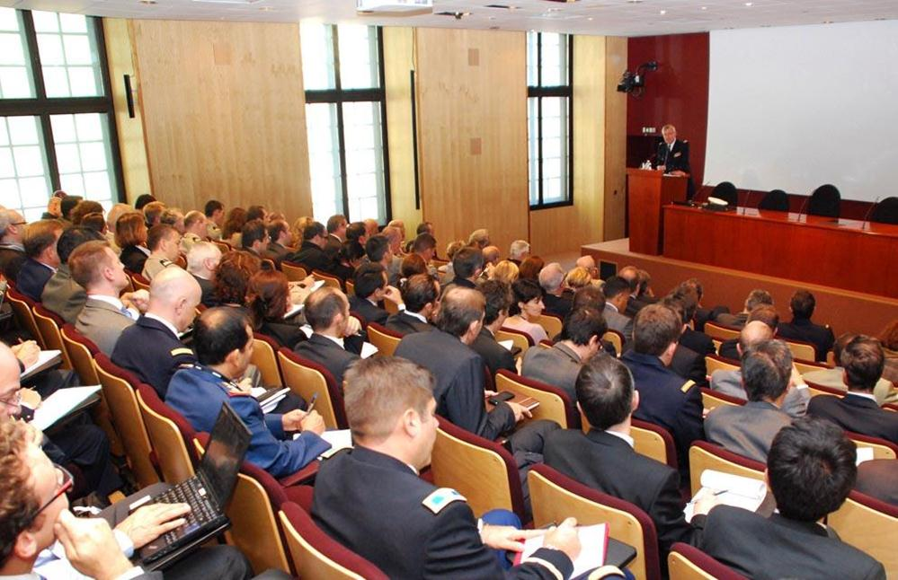
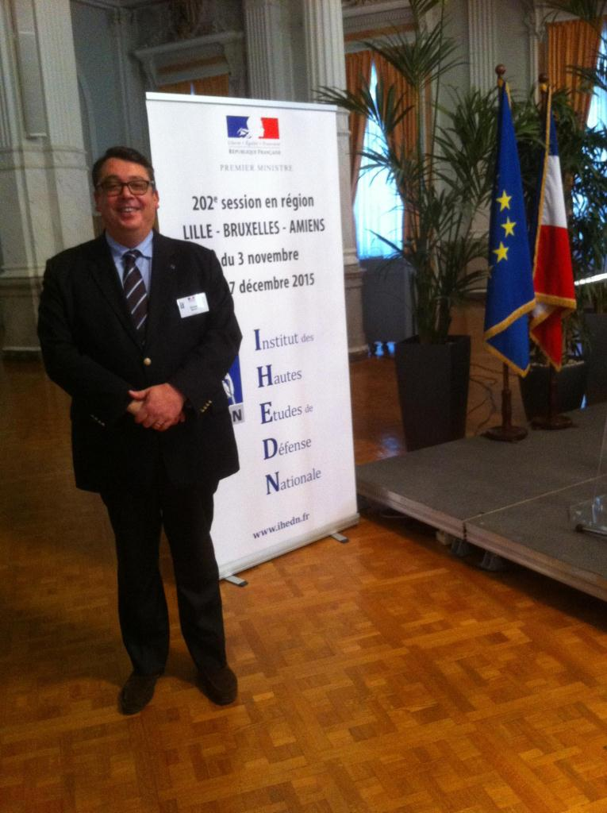
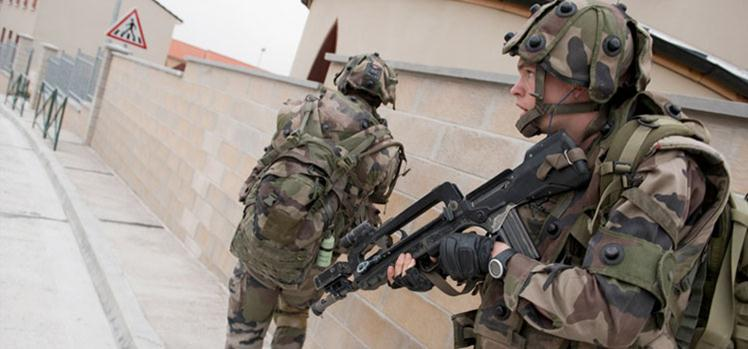

Si vis pacem, para bellum (« Qui veut la paix prépare la guerre ») tel pourrait être la devise de l’Institut des Hautes Etudes de Défense Nationale.
L’Ecole Militaire de Paris
L’IHEDN est installé au sein de l’Ecole Militaire de Paris qui fut fondée par Louis XV en 1748 à la sortie de la guerre de Succession d'Autriche sur proposition de sa maitresse : la marquise de Pompadour et du maréchal de Saxe; l’école fut à l’origine une institution destinée à former aux arts de la guerre de jeunes gens nobles désargentés.
Abandonné à la mort de Louis XV, le bâtiment construit par l’architecte Ange-Jacques Gabriel retrouvera sa place sous la révolution française quand il devint le quartier général du général Bonaparte, qui y installa son bureau en 1795 dans le magnifique salon des Maréchaux.
L’Ecole Militaire de Paris est le siège de L’IHEDN, organisme de formation mais également de l'Institut national des hautes études de la sécurité et de la justice (INHESJ) qui forme les responsables de la sécurité en France et du Centre des hautes études militaires (CHEM) qui forme les officiers supérieurs appelés à de hautes fonctions.
Si l’IHEDN et l’INHESJ dépendent de la tutelle du Premier ministre depuis 1979, le CHEM dépend du Chef d’état-major des armées (CEMA) qui réside d’ailleurs dans les bâtiments de l’école Militaire.
L’Ecole Militaire
Cette école parisienne recèle aussi de nombreux autres pôles d’excellence tels que : L’Institut de recherche stratégique de l'École militaire, l’Ecole de guerre, la délégation à l'information et à la communication de la Défense (DICoD) et enfin le Groupement de soutien de la base de défense de Paris École militaire.
L’Institut des Hautes Etudes de Défense Nationale
Revenons plus longuement sur l’IHEDN dont nous suivons, en qualité d’auditeur de la 202° session en région, les enseignements de novembre à décembre 2015.
L’IHEDN a succédé en 1948, au Collège des Hautes Etudes de Défense Nationale (CHEDN) qui avait été fondé par l’amiral Castex en 1936.
Cet institut de niveau gouvernemental avait pour vocation de former une certaine « élite » républicaine dans une vision dépassant le seul cadre militaire. Depuis les années 60, l’Institut devient le lieu d’explication d’une politique de défense devenue globale et permanente.
Avec la chute du mur de Berlin, la fin de la « guerre froide » et la suppression du service national en France en 1997, l’Institut est réformé et se voit doté de la personnalité morale et d’une l’autonomie financière.

Allocution à l’IHEDN
Que propose l’IHEDN ?
Au fil de son existence, l’Institut s’est adapté à la nature de la guerre et aux exigences que celle-ci impose à la Nation dans un environnement qui s’internationalise.
À l’origine il n’existait que des sessions nationales sur Paris mais elles devinrent régionales en 1954 puis internationales en 1980.
Par la suite, l’IHEDN proposera des cycles d’Intelligence économique (1995), des séminaires jeunes (1996), des séminaires ciblés et des activités de soutien à la recherche en matière de défense (1998). Il est l’un des précurseurs du Collège européen de sécurité et de défense (2004).
L’Institut ou IH’ - comme disent les initiés - vit également à travers un réseau d’une trentaine d’associations régionales regroupant les auditeurs des sessions régionales ainsi que des auditeurs des sessions nationales et des cadres résidants en province.
L’engagement des auditeurs se poursuit au-delà des sessions régionales et affiche trois objectifs :
Maintenir et renforcer les liens entre les auditeurs de l’IHEDN;
Développer l’esprit de défense dans la nation;
Contribuer à la réflexion sur la défense nationale et apporter son concours à l’Institut pour l’accomplissement de sa tâche.
La 197° promotion à Rennes
Comment devient-on auditeur ?

Olivier MENUTL’IHEDN repose sur un concept assez unique au monde qui est basé sur la diversité des auditeurs issus du monde civil et militaire, mais aussi de la fonction publique ou du secteur privé. Ses auditeurs deviendront eux-mêmes une source de rayonnement tant en France qu’à l’étranger et auront pour mission de concourir au resserrement du lien entre l’armée et la nation.
Les auditeurs, hommes et femmes âgés d’au moins 30 ans, sont sélectionnés en fonction de leurs cursus professionnels, universitaires, de leurs engagements citoyens etc…présentés dans un dossier de candidature déposés en préfecture pour les candidats du secteur privé ou de certains secteurs publics ou auprès de leur hiérarchie pour les militaires et certains fonctionnaires (défense, éducation nationale, justice).
Une sélection est faite jusqu’à constituer une session d’environ 70 auditeurs qui sont confirmés dans leur sélection puis nommés par arrêté du premier ministre publié au journal officiel de la république française
Le cout de la formation est de 300 euros (gratuite pour les militaires) mais peut être prise sur les crédits formations des entreprises ou administrations des auditeurs.
Qu’est-ce qu’une session en région ?
La session en région est structurée autour d’un partage d’expériences entre hauts responsables issus du service public et de la société civile qui dépasse les segmentations socioprofessionnelles et nationales qui se décline sur 3 axes pédagogiques :
Des conférences débats au cours desquelles s’expriment des intervenants de haut niveau (officiers généraux, professeurs d’université, spécialistes des relations internationales, etc… Le principe étant que chaque conférence est suivie d’un débat entre les auditeurs et l’intervenant.
Des visites et missions d’études sur le terrain qui permettent une approche concrète de l’enseignement dispensé aussi bien dans des environnements militaires, que stratégiques ou industries de l’armement.
Enfin les "travaux en comités" où se concrétise une riche complémentarité entre un groupe d’auditeurs sur un sujet imposé et faisant l’objet d’un rapport à remettre en fin de session.
Lors de la 202° session en région qui s’est tenue de novembre à décembre 2015, les auditeurs ont eu l’occasion de suivre de nombreuses conférences sur la vente d’armement par la France, sa géostratégie internationale et sa politique de défense du territoire par des conférenciers issus du monde universitaire, diplomatique ou militaire.
Nous avons également eu l’occasion de visiter plusieurs régiments et gendarmeries, le centre des forces terrestres de Lille mais aussi le commandement de l’OTAN (Shape) à Mons (Belgique).
Les travaux d’une session en région se fait à travers des comités (soit un groupe de 12 personnes). Chaque session comprenant environ 70 auditeurs, il y a 5 comités en moyenne.
Chaque comité se voit imposer un thème de travail par la direction pédagogique de l’IHEDN et doit faire l’objet d’un travail de groupe basé sur un échange « courtois » ou chacun apporte sa contribution intellectuelle en fonction de sa sensibilité et de son expertise. Un rapport d’une quinzaine de page est rédigé par le comité et présenté en assemblée plénière à la fin de la session.
Notre comité composé de magistrat, officiers de marine et de sapeur pompiers, d’un aumônier militaire protestant, d’administrateurs civils, de chercheurs, de professeurs, de chefs d’entreprise ou de fonctionnaires territoriaux a été amené à travailler sur les « conséquences de l’opération sentinelle sur les militaires et leur place au cœur de la nation ».
Comme on peut s’en douter les terribles évènements de Paris du 13 novembre dernier bouleverseront totalement le plan de notre rapport de comité sur l’opération « Sentinelle », celle-ci étant même qualifiée de « Ligne Maginot de la sécurité intérieure » par certain1. Nous fument tout de même surpris de constater que le président de la république reprenait l’idée de la création d’une ‘Garde nationale », lors de son discours au

Les auditeurs de l’IHEDN sont conviés à plusieurs visites d’unités des différentes armées, comme ici au Centre d’entraînement aux actions en zone urbaine à Sissonne
Congrès de Versailles le 16 novembre, solution que nous avions déjà imaginé en comité.
Cela montre, si besoin est, l’intérêt d’une telle formation, qui permet à des français issus d’horizons différents de devenir pleinement acteurs de notre pays et de contribuer ainsi au renforcement du lien armée-nation, particulièrement distendu depuis la suppression du service national en 1997.
Plus que jamais, en cette période d’agression de notre nation par la barbarie djihadiste, les auditeurs de l’IHEDN se doivent d’être des acteurs de la Liberté, de l’Egalité et de la Fraternité.
O.M.
1 « Opération Sentinelle: la ligne Maginot de la sécurité intérieure » par Jean-Dominique Merchet , web site L’Opinion - 15 Novembre 2015.
Partager cette page